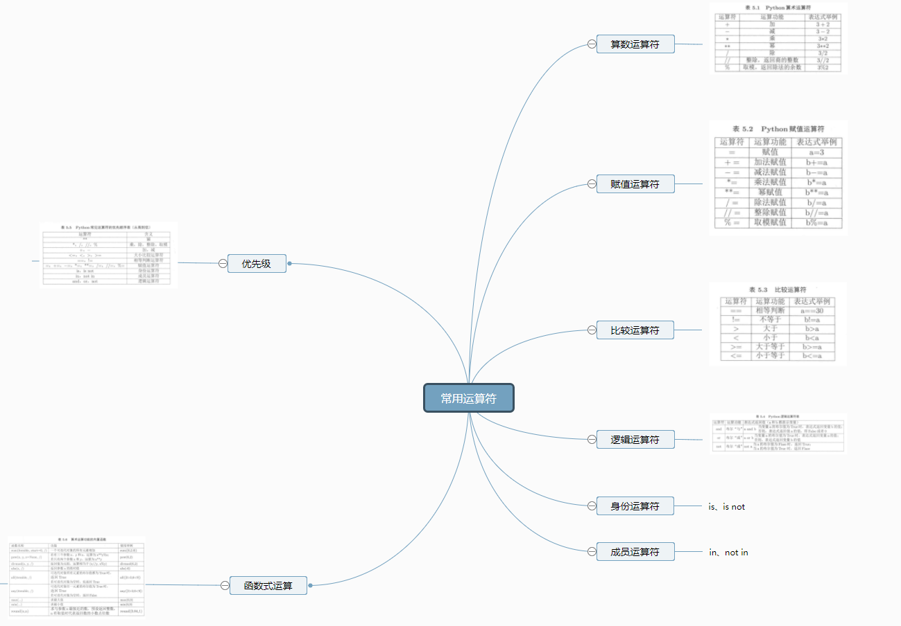
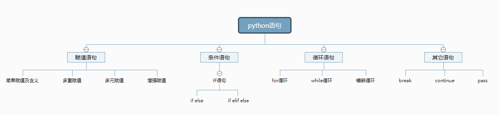

原文出处:本文由博客园博主奔袭的王大锤提供。
原文连接:https://www.cnblogs.com/flyingcow/p/11300529.html
原文连接:https://www.cnblogs.com/flyingcow/p/11300529.html
前面应该是记流水账的方式，毕竟学习的内容不多无法产出什么有效的内容。
这两天从开始下载Python开始学习，一路顺畅冒的问题，直到开始学习python的游戏规则，严格缩进、注释及‘’的使用等感觉还不错，多看几遍都可以记下来，但是没实操过还是有点记忆较差。
python对象，也就是列表等使用规则和特征用导图的方式记忆效果不错：

后面的运算符和语句也是这样这样学习记忆：


你要问我记忆效果怎么样？我的回答是：目前只能理解其中的含义和基础规则，还谈不到复杂的应用上！这些游戏规则打算边实践边应用。
当前学习的内容是函数，这个遇到点问题，里面的定义和应用方式还要思考下，但主要还是以记忆理解为主，还未到应用。